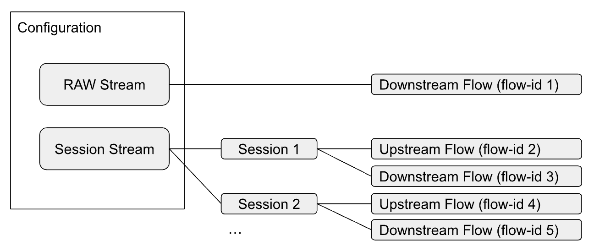

Traffic Streams
The BNG Blaster can perform various forwarding verifications and QoS tests using traffic streams.

Traffic streams can be either bounded or RAW. Bounded streams are associated with an access configuration that specifies the session parameters, such as protocols and encapsulations. Those streams are instantiated per session and get their addresses automatically from the sessions that they belong to.
RAW streams are linked to network interfaces that provide the source addresses unless they are manually set.
It is also possible to create traffic streams on network interfaces to or from destinations associated with certain emulated routing topologies. For instance, you can emulate an ISIS network, advertise BGP prefixes with next-hops in this emulated ISIS network, and then send traffic to or from one of those BGP prefixes.
Understanding Flows
A flow represents a particular instance of a traffic stream where a stream can consist of one or more flows, depending on its configuration and the number of sessions it is associated with. For example:
A unidirectional stream is represented by a single flow that sends or receives traffic from one end to another
A bidirectional stream is represented by two flows that send and receive traffic in opposite directions
A stream that is bound by sessions can be instantiated multiple times for each session and direction
Each flow can be identified by its flow-id, which is a unique number automatically assigned by the BNG Blaster.
You can use the stream-info flow-id <id> command to get detailed information about a specific flow,
such as its configuration, statistics, and state. You can also use the stream-summary command to get a
brief overview of all the flows that are currently active or configured.
Configuration
Following a simple PPPoE example with streams.
{
"interfaces": {
"network": {
"interface": "eth2",
"address": "10.0.0.1/24",
"gateway": "10.0.0.2",
"address-ipv6": "fc66:1337:7331::1/64",
"gateway-ipv6": "fc66:1337:7331::2"
},
"access": [
{
"interface": "eth1",
"outer-vlan-min": 1001,
"outer-vlan-max": 2000,
"inner-vlan-min": 7,
"inner-vlan-max": 7,
"type": "pppoe",
"stream-group-id": 1
},
{
"interface": "eth1",
"outer-vlan-min": 2001,
"outer-vlan-max": 4000,
"inner-vlan": 7,
"type": "pppoe",
"stream-group-id": 2
}
]
},
"streams": [
{
"name": "BestEffort",
"stream-group-id": 1,
"type": "ipv4",
"direction": "both",
"pps": 1000
},
{
"name": "Voice",
"stream-group-id": 1,
"type": "ipv4",
"direction": "downstream",
"priority": 128,
"vlan-priority": 2,
"network-ipv4-address": "10.0.0.10",
"pps": 100
},
{
"name": "BestEffort",
"stream-group-id": 2,
"type": "ipv4",
"direction": "both",
"pps": 1
}
]
}
{ "streams": {} }
Attribute |
Description |
name |
Mandatory stream name.
|
stream-group-id |
Stream group identifier.
Default: 0 (raw)
|
type |
Mandatory stream type (ipv4, ipv6, or ipv6pd).
|
direction |
Stream direction (upstream, downstream, or both).
Default: both
|
autostart |
Enable stream autostart.
Default: true
|
source-port |
Overwrite the default source port.
For bidirectional streams (direction both), this is applied
as source port in upstream and destination port in downstream.
Default: 65056 Range: 0 - 65535
|
destination-port |
Overwrite the default destination port.
For bidirectional streams (direction both), this is applied
as destination port in upstream and source port in downstream.
Default: 65056 Range: 0 - 65535
|
ipv4-df |
Set IPv4 DF bit.
Default: true
|
priority |
IPv4 TOS / IPv6 TC.
For L2TP downstream traffic, the IPv4 TOS is applied
to the outer IPv4 and inner IPv4 header.
Default: 0 Range: 0 - 255
|
vlan-priority |
VLAN priority.
Default: 0 Range: 0 - 7
|
length |
Layer 3 (IP header + payload) traffic length.
Default: 128 Range: 76 - 9000
|
ttl |
TTL.
Default: 64 Range: 0 - 255
|
pps |
Stream traffic rate in packets per second.
This value supports also float numbers like 0.1 or 2.5.
In example 0.1 means one packet every 10 seconds.
Default: 1.0
|
bps |
Stream traffic rate in bits per second (layer 3).
PPS has priority over bps where the second is only a helper
to calculate the actual PPS based on given bps and length.
The resulting rate in bps is the layer 3 rate because length
is also the layer 3 length (IP header + payload).
It is also supported to put the capital letters K (Kilo),
M (Mega) or G (Giga) in front of bps for better readability.
For example,
"Gbps": 1which is equal to
"bps": 1000000000. |
pps-upstream |
Optionally overwrite PPS in upstream to support bidirectional
streams with different rates for upstream and downstream.
|
bps-upstream |
Optionally overwrite bps in upstream to support bidirectional
streams with different rates for upstream and downstream.
|
setup-interval |
Set optional setup interval in seconds. If set, sent max 1
packet per setup interval until stream becomes verified.
After setup is done, the actual rate will be applied.
For bidirectional streams (direction both), this requires both
directions to be verified.
Default: 0 (disabled) Range: 0 - 900
|
a10nsp-interface |
Select the corresponding A10NSP interface for this stream.
|
network-interface |
Select the corresponding network interface for this stream.
|
network-ipv4-address |
Overwrite network interface IPv4 address.
|
network-ipv6-address |
Overwrite network interface IPv6 address.
|
destination-ipv4-address |
Overwrite the IPv4 destination address.
|
destination-ipv6-address |
Overwrite the IPv6 destination address.
|
access-ipv4-source-address |
Overwrite the access IPv4 source address (client).
This option can be used to test the BNG RPF functionality
with traffic sent from source addresses different than those
assigned to the client.
|
access-ipv6-source-address |
Overwrite the access IPv6 source address (client).
This option can be used to test the BNG RPF functionality
with traffic sent from source addresses different than those
assigned to the client.
|
max-packets |
Send a burst of N packets and stop.
Default: 0 (infinity)
|
start-delay |
Wait N seconds after the session is established
before starting the traffic stream.
Default: 0
|
tx-label1 |
MPLS send (TX) label (outer label).
|
tx-label1-exp |
EXP bits of the first label (outer label).
Default: 0
|
tx-label1-ttl |
TTL of the first label (outer label).
Default: 255
|
tx-label2 |
MPLS send (TX) label (inner label).
|
tx-label2-exp |
EXP bits of the second label (inner label).
Default: 0
|
tx-label2-ttl |
TTL of the second label (inner label).
Default: 255
|
rx-label1 |
Expected receive MPLS label (outer label).
|
rx-label2 |
Expected receive MPLS label (inner label).
|
ldp-ipv4-lookup-address |
Dynamically resolve outer label.
|
ldp-ipv6-lookup-address |
Dynamically resolve outer label.
|
nat |
Enable NAT support.
Default: false
|
raw-tcp |
Send RAW TCP traffic (UDP-like traffic with TCP header).
Default: false
|
Stream Configuration File
The command line argument -T <filename> allows the include
of streams defined in a separate file. The format is equal to
streams defined in the actual configuration file. Such stream
configuration files could be generated by scripts and
easily merged with the base configuration.
{
"streams": []
}
RAW Streams
Streams with default stream-group-id set to zero are considered raw streams not
bound to any session which is supported downstream only. For those streams, the
destination address must be explicitly set.
RAW streams can be used for traffic between network interfaces but also to send traffic from network to access interfaces.
{
"streams": [
{
"name": "RAW",
"type": "ipv4",
"direction": "downstream",
"priority": 128,
"network-ipv4-address": "10.0.0.20",
"destination-ipv4-address": "1.1.1.1",
"length": 256,
"pps": 1
}
]
}
If destination-ipv4-address is set to a multicast IP address (224.0.0.0 - 239.255.255.255),
the BNG Blaster will set the destination MAC address to the corresponding
multicast MAC address automatically. For unicast traffic the network gateway MAC address is used.
TCP RAW Streams
A new option called raw-tcp is added to the stream configuraton.
If enabled, UDP-like traffic with a constant rate is sent using a
static (RAW) TCP header.
{
"streams": [
{
"name": "TCP1",
"stream-group-id": 1,
"type": "ipv4",
"direction": "both",
"pps": 1,
"raw-tcp": true,
"network-ipv4-address": "10.0.0.1"
}
]
}
This option can be used stand-alone to verify firewall filters or together with the new NAT option to verify NAT TCP streams.
For now, TCP flags (SYN, …) are statically set to SYN but this could be adopted if needed.
Stream Commands
The BNG Blaster provides multiple commands to control and check traffic streams.
The command stream-summary returns a list of all flows with terse informations.
This list can be optionally filtered using different arguments like session-group-id,
name, interface and direction. This summary output can be used to identify the actual
flow-id of a particular stream to query detailed informations using
the stream-info flow-id <id> command.
The session-streams command returns detailed stream statistics per session.
$ sudo bngblaster-cli run.sock session-streams session-id 1
{
"status": "ok",
"code": 200,
"session-streams": {
"session-id": 1,
"rx-packets": 59670,
"tx-packets": 54610,
"rx-accounting-packets": 59655,
"tx-accounting-packets": 54594,
"rx-pps": 1100,
"tx-pps": 1000,
"rx-bps-l2": 9028800,
"tx-bps-l2": 8240000,
"rx-mbps-l2": 9.0288,
"tx-mbps-l2": 8.24,
"streams": [
{
"name": "BestEffort",
"direction": "upstream",
"flow-id": 1,
"rx-first-seq": 362,
"rx-last-seq": 54593,
"rx-tos-tc": 0,
"rx-outer-vlan-pbit": 0,
"rx-inner-vlan-pbit": 0,
"rx-len": 1014,
"tx-len": 1030,
"rx-packets": 54232,
"tx-packets": 54594,
"rx-loss": 0,
"rx-delay-us-min": 37,
"rx-delay-us-max": 98595,
"rx-pps": 1000,
"tx-pps": 1000,
"tx-bps-l2": 8240000,
"rx-bps-l2": 8112000,
"rx-bps-l3": 8000000,
"tx-mbps-l2": 8.24,
"rx-mbps-l2": 8.112,
"rx-mbps-l3": 8.0
},
{
"name": "BestEffort",
"direction": "downstream",
"flow-id": 2,
"rx-first-seq": 362,
"rx-last-seq": 54593,
"rx-tos-tc": 0,
"rx-outer-vlan-pbit": 0,
"rx-inner-vlan-pbit": 0,
"rx-len": 1026,
"tx-len": 1014,
"rx-packets": 54232,
"tx-packets": 54594,
"rx-loss": 0,
"rx-delay-us-min": 43,
"rx-delay-us-max": 98903,
"rx-pps": 1000,
"tx-pps": 1000,
"tx-bps-l2": 8112000,
"rx-bps-l2": 8208000,
"rx-bps-l3": 8000000,
"tx-mbps-l2": 8.112,
"rx-mbps-l2": 8.208,
"rx-mbps-l3": 8.0
},
{
"name": "Voice",
"direction": "downstream",
"flow-id": 3,
"rx-first-seq": 37,
"rx-last-seq": 5458,
"rx-tos-tc": 128,
"rx-outer-vlan-pbit": 0,
"rx-inner-vlan-pbit": 0,
"rx-len": 1026,
"tx-len": 1014,
"rx-packets": 5422,
"tx-packets": 5458,
"rx-loss": 0,
"rx-delay-us-min": 41,
"rx-delay-us-max": 96548,
"rx-pps": 100,
"tx-pps": 100,
"tx-bps-l2": 811200,
"rx-bps-l2": 820800,
"rx-bps-l3": 800000,
"tx-mbps-l2": 0.8112,
"rx-mbps-l2": 0.8208,
"rx-mbps-l3": 0.8
}
]
}
}
The rx-outer-vlan-pbit might be wrong depending on the network interface driver and
optional VLAN offloading.
The measured rx-delay-us-min/max shows the minimum and maximum calculated delay
in microseconds. The delay is calculated by subtracting the send and receive timestamp.
The send timestamp is stored in the BBL header (see section Traffic). This calculated
result depends also on the actual test environment, configured rx-interval and host IO
delay.
Traffic streams will start as soon as the session is established using the rate as configured
starting with sequence number 1 for each flow. The attribute rx-first-seq stores the first
sequence number received. Assuming the first sequence number received for a given flow is 1000
combined with a rate of 1000 PPS would mean that it took around 1 second until forwarding is
working. After the first packet is received for a given flow, for every further packet it checks
if there is a gap between the last and new sequence number which is then reported as a loss.
The rx/tx-accounting-packets are all packets that should be counted in the session volume
accounting of the BNG, meaning session RX/TX packets excluding control traffic.
Each flow can be queried separately using jsonpath expression with name and direction or flow-id.
$ sudo bngblaster-cli run.sock session-streams session-id 1 | jq '."session-streams".streams[] | select(.name == "BE" and .direction == "downstream" )'
{
"name": "BE",
"direction": "downstream",
"flow-id": 2,
"rx-first-seq": 33,
"rx-last-seq": 27040,
"rx-tos-tc": 213,
"rx-outer-vlan-pbit": 0,
"rx-inner-vlan-pbit": 0,
"rx-len": 126,
"tx-len": 114,
"rx-packets": 27008,
"tx-packets": 27040,
"rx-loss": 0,
"rx-delay-us-min": 50,
"rx-delay-us-max": 10561,
"rx-pps": 99,
"tx-pps": 99,
"tx-bps-l2": 90288,
"rx-bps-l2": 99792,
"rx-bps-l3": 79200,
"tx-mbps-l2": 0.090288,
"rx-mbps-l2": 0.099792,
"rx-mbps-l3": 0.0792
}
Start/Stop Traffic
The BNG Blaster provides multiple options to start, stop and autostart traffic streams which are divided into two parts. The global traffic state and the flow state.
The global traffic state determines whether any traffic stream can be sent or not. The flow state is a property of each flow that indicates whether it is enabled or disabled.
Before sending a packet, the BNG Blaster performs several checks to ensure that the flow is ready to send. These checks include:
The global traffic state must be enabled.
The flow state must be enabled.
The TX interface for the flow must be up.
The endpoint for the flow must be active (e.g. PPPoE session still established).
The global traffic state can be changed by multiple methods like the configuration
parameter { "traffic": { "autostart": true/false } }, the commands traffic-start/stop,
and the keyboard shortcuts F7/F8. All these methods have the same effect of setting
the global traffic state.
The flow state can be changed by different configurations and commands, depending on the traffic type. There are three types of traffic: unicast-streams, multicast-streams, and session-traffic.
The configuration section {"streams": []} defines two kinds of streams: unicast or multicast.
The destination IP address determines the stream type: multicast IP means multicast stream,
otherwise unicast stream. The configuration {"traffic": {"stream-autostart": true/false}}
and {"traffic": {"multicast-autostart": true/false}} control the initial state of unicast
and multicast streams, respectively. The commands stream-start/stop
and multicast-traffic-start/stop can modify the state of these streams at any time.
$ sudo bngblaster-cli run.sock stream-start session-group-id 1 direction upstream
The configuration {"session-traffic": []} defines another kind of stream called session-traffic.
The configuration {"session-traffic": {"autostart": true/false}} controls the initial state
of session-traffic. The commands session-traffic-start/stop
can modify the state of these streams at any time.
$ sudo bngblaster-cli run.sock session-traffic-start session-id 1
Details about all commands and their arguments can found int the API/CLI section.
BNG Blaster Traffic
Blaster Header and Fast Decode Signature
The 48 Byte fixed size BNG Blaster Header is added to all data packets for traffic validation and fast decoding. The header is expected on the last 48 bytes of the packet.
The type is set to 1 for all unicast session traffic and 2 for IPv4 multicast traffic.
Unicast Session Traffic
The 64-bit session key is used for all traffic from access (upstream) and to access (downstream) interfaces to identify the corresponding session which has sent or should receive the packet.
0 1 2 3 4 5 6 7 8 9 0 1 2 3 4 5 6 7 8 9 0 1 2 3 4 5 6 7 8 9 0 1
+-+-+-+-+-+-+-+-+-+-+-+-+-+-+-+-+-+-+-+-+-+-+-+-+-+-+-+-+-+-+-+-+
| BNG Blaster Magic Sequence |
| |
+-+-+-+-+-+-+-+-+-+-+-+-+-+-+-+-+-+-+-+-+-+-+-+-+-+-+-+-+-+-+-+-+
| Type | Sub-Type | Direction | TX TOS |
+-+-+-+-+-+-+-+-+-+-+-+-+-+-+-+-+-+-+-+-+-+-+-+-+-+-+-+-+-+-+-+-+
| Session Identifier |
+-+-+-+-+-+-+-+-+-+-+-+-+-+-+-+-+-+-+-+-+-+-+-+-+-+-+-+-+-+-+-+-+
| Session Access Interface Index |
+-+-+-+-+-+-+-+-+-+-+-+-+-+-+-+-+-+-+-+-+-+-+-+-+-+-+-+-+-+-+-+-+
| Session Outer VLAN | Session Inner VLAN |
+-+-+-+-+-+-+-+-+-+-+-+-+-+-+-+-+-+-+-+-+-+-+-+-+-+-+-+-+-+-+-+-+
| Flow Identifier |
| |
+-+-+-+-+-+-+-+-+-+-+-+-+-+-+-+-+-+-+-+-+-+-+-+-+-+-+-+-+-+-+-+-+
| Flow Sequence Number |
| |
+-+-+-+-+-+-+-+-+-+-+-+-+-+-+-+-+-+-+-+-+-+-+-+-+-+-+-+-+-+-+-+-+
| Nanosecond Send Timestamp |
| |
+-+-+-+-+-+-+-+-+-+-+-+-+-+-+-+-+-+-+-+-+-+-+-+-+-+-+-+-+-+-+-+-+

Multicast Traffic
0 1 2 3 4 5 6 7 8 9 0 1 2 3 4 5 6 7 8 9 0 1 2 3 4 5 6 7 8 9 0 1
+-+-+-+-+-+-+-+-+-+-+-+-+-+-+-+-+-+-+-+-+-+-+-+-+-+-+-+-+-+-+-+-+
| BNG Blaster Magic Sequence |
| |
+-+-+-+-+-+-+-+-+-+-+-+-+-+-+-+-+-+-+-+-+-+-+-+-+-+-+-+-+-+-+-+-+
| Type | Sub-Type | Direction | TX TOS |
+-+-+-+-+-+-+-+-+-+-+-+-+-+-+-+-+-+-+-+-+-+-+-+-+-+-+-+-+-+-+-+-+
| Reserved |
+-+-+-+-+-+-+-+-+-+-+-+-+-+-+-+-+-+-+-+-+-+-+-+-+-+-+-+-+-+-+-+-+
| Source |
+-+-+-+-+-+-+-+-+-+-+-+-+-+-+-+-+-+-+-+-+-+-+-+-+-+-+-+-+-+-+-+-+
| Group |
+-+-+-+-+-+-+-+-+-+-+-+-+-+-+-+-+-+-+-+-+-+-+-+-+-+-+-+-+-+-+-+-+
| Flow Identifier |
| |
+-+-+-+-+-+-+-+-+-+-+-+-+-+-+-+-+-+-+-+-+-+-+-+-+-+-+-+-+-+-+-+-+
| Flow Sequence Number |
| |
+-+-+-+-+-+-+-+-+-+-+-+-+-+-+-+-+-+-+-+-+-+-+-+-+-+-+-+-+-+-+-+-+
| Nanosecond Send Timestamp |
| |
+-+-+-+-+-+-+-+-+-+-+-+-+-+-+-+-+-+-+-+-+-+-+-+-+-+-+-+-+-+-+-+-+
Note
All attributes except IP addresses in the Blaster Header are stored in host byte order for faster processing (LE or BE depending on the test system).
BNG Blaster Magic Sequence
The 64-bit magic sequence is the word RtBrick! decoded as ASCII:
0x5274427269636b21
Storing the magic number on a fixed offset allows fast identification of blaster traffic.
Flow Identifier
The 64-bit flow identifier is a globally unique number that identifies the flow.
Flow Sequence Number
The 64-bit flow sequence number is a sequential number starting with 1 and incremented per packet primary used to identify packet loss.
This number 0 means that sequencing is disabled.
Nanosecond Send Timestamps
The 64-bit nanoseconds send timestamp is used for optional latency and jitter calculations.
0 1 2 3 4 5 6 7 8 9 0 1 2 3 4 5 6 7 8 9 0 1 2 3 4 5 6 7 8 9 0 1
+-+-+-+-+-+-+-+-+-+-+-+-+-+-+-+-+-+-+-+-+-+-+-+-+-+-+-+-+-+-+-+-+
| Seconds |
+-+-+-+-+-+-+-+-+-+-+-+-+-+-+-+-+-+-+-+-+-+-+-+-+-+-+-+-+-+-+-+-+
| Nano Seconds |
+-+-+-+-+-+-+-+-+-+-+-+-+-+-+-+-+-+-+-+-+-+-+-+-+-+-+-+-+-+-+-+-+
The timestamp 0 means that timestamps are disabled.